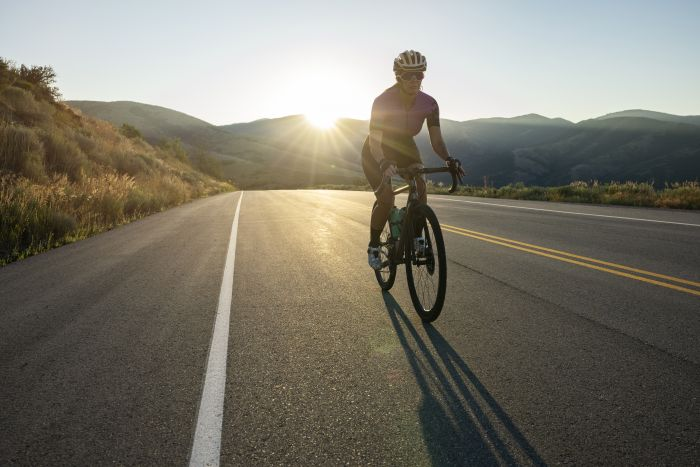
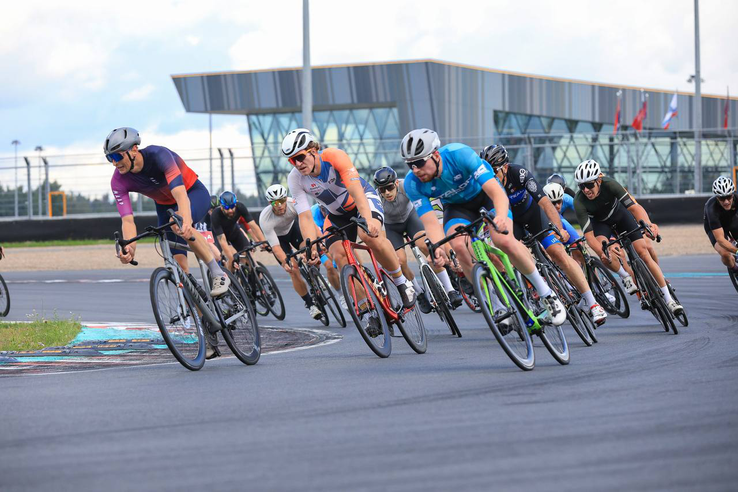

Get Started
If you just want to design a gearing system, click here and choose your chainwheels, cassette/freewheel parameters, and gearing preferences. Your ideal freewheel options will be calculated for you.
Or perhaps you want more detailed instructions.That's often the best way to approach things (RTFM, as they say).
Other Information
This site is still under development. But we already have some FAQs about the site and about bicycle gears. We also debunk some common myths and misconceptions about gearing.